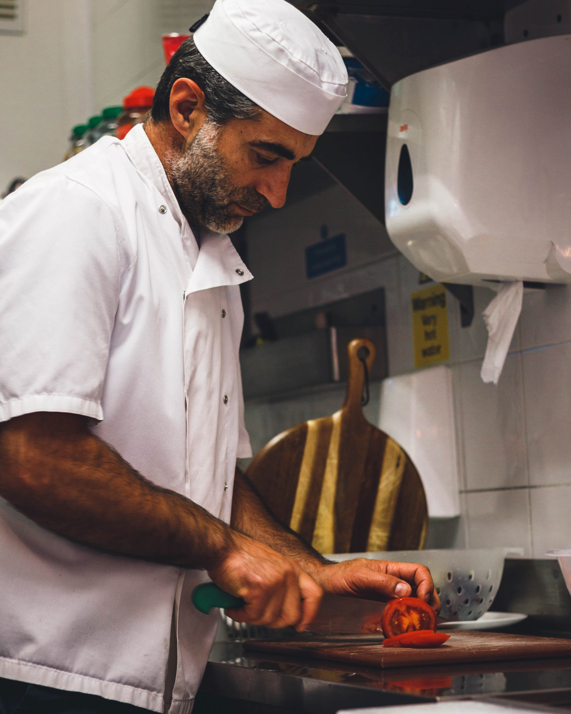

GUSTOSA
Welcome to Gustosa. We are an Italian-based diner located in Grafton Street. We serve the finest Italian cuisine Dublin has to offer, and cook all our meals to a high standard just like our chefs back in Italy. Originally the Gustosa restaurant chain began in Naples in 1949 and it was such a success that we decided to go worldwide. We really hope you enjoy our food.


Owner: Emiliano Ravinelli
Emilio took over the family business from his father Luca, in 2007. After a spell travelling in Europe and the US, he opened two more restaurants in Naples and Chicago. After a visit to Dublin in 2018 he fell in love with the city and opened Gustosa in June 2019.
Manager: Claudia Balotelli
Claudia met Emilio in Chigaco during his travels, where he hired her to be the manager of the American branch. She did an exceptional job and and was wanted by many restauraunts all over the USA. Claudia then fell in love with footballer Mario Balotelli and they married. During the end of Mario's footballing career he signed for Shamrock Rovers of Dublin and himself so Claudia had to relocate hence why Claudia now manages the Grafton Street branch.

